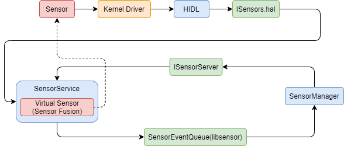
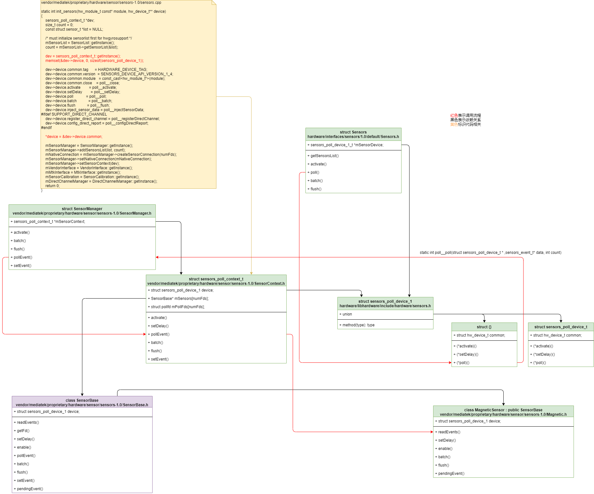
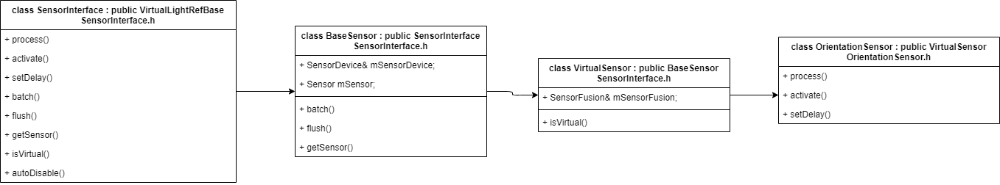

Android Sensors
Android传感器架构
参考文档
log
diff --git a/frameworks/native/services/sensorservice/SensorService.h b/frameworks/native/services/sensorservice/SensorService.h
index e6ec96dd0a2..90869ec9d9d 100644
--- a/frameworks/native/services/sensorservice/SensorService.h
+++ b/frameworks/native/services/sensorservice/SensorService.h
@@ -51,7 +51,7 @@
// ---------------------------------------------------------------------------
#define IGNORE_HARDWARE_FUSION false
-#define DEBUG_CONNECTIONS false
+#define DEBUG_CONNECTIONS true
// Max size is 100 KB which is enough to accept a batch of about 1000 events.
#define MAX_SOCKET_BUFFER_SIZE_BATCHED (100 * 1024)
// For older HALs which don't support batching, use a smaller socket buffer size.
diff --git a/vendor/mediatek/proprietary/hardware/sensor/sensors-1.0/SensorManager.cpp b/vendor/mediatek/proprietary/hardware/sensor/sensors-1.0/SensorManager.cpp
index ef47adffd6b..fbb33744c2e 100644
--- a/vendor/mediatek/proprietary/hardware/sensor/sensors-1.0/SensorManager.cpp
+++ b/vendor/mediatek/proprietary/hardware/sensor/sensors-1.0/SensorManager.cpp
@@ -40,7 +40,7 @@
#undef LOG_TAG
#define LOG_TAG "SensorManager"
-#define DEBUG_CONNECTIONS false
+#define DEBUG_CONNECTIONS true
SensorConnection::SensorConnection() {
mFlushCnt.clear();
传感器数据流

hardware/interfaces/sensors/2.0/ISensors.hal
#include <android/hardware/sensors/2.0/ISensors.h>
frameworks/native/libs/sensor/include/sensor/ISensorServer.h
HIDL层
HIDL初始化及poll流程：
* vendor/mediatek/proprietary/hardware/sensor/hidl/2.0/service.cpp // hidl主程序
├── android::sp<ISensors> sensors = new Sensors(); // 创建Sensors Service Binder及相关初始化；
│ └── vendor/mediatek/proprietary/hardware/sensor/hidl/2.0/Sensors.cpp
│ └── Sensors::Sensors() // Sensors的构造函数
│ ├── err = hw_get_module(SENSORS_HARDWARE_MODULE_ID, (hw_module_t const **)&mSensorModule); // 加载HAL模块
│ ├── err = sensors_open_1(&mSensorModule->common, &mSensorDevice); // 调用HAL层的open函数，初始化HAL层
│ │ └── hardware/libhardware/include/hardware/sensors.h // 衔接HIDL到HAL层
│ │ └── static inline int sensors_open_1(const struct hw_module_t* module, sensors_poll_device_1_t** device)
│ │ └── return module->methods->open(module, SENSORS_HARDWARE_POLL, TO_HW_DEVICE_T_OPEN(device)); // 打开HAL层open函数
│ │ └── vendor/mediatek/proprietary/hardware/sensor/sensors-1.0/sensors.cpp
│ │ └── static struct hw_module_methods_t sensors_module_methods
│ │ └── .open = open_sensors // open函数所在位置
│ │ └── static int open_sensors(const struct hw_module_t* module, const char* name, struct hw_device_t** device)
│ │ └── return init_sensors(module, device); // 初始化HAL层所有的sensors
│ │ ├── mSensorList = SensorList::getInstance(); // 获取SensorList
│ │ │ └── SensorList *SensorList::getInstance()
│ │ │ └── SensorList *mInterface = new SensorList;
│ │ │ └── SensorList::SensorList()
│ │ │ ├── initSensorList(); // 初始化SensorList
│ │ │ └── ALOGE("read /dev/sensorlist fail we use defaultsensorlist\n"); // log中提示，所以只是用了initSensorList中的传感器
│ │ ├── count = mSensorList->getSensorList(&list);
│ │ ├── dev = sensors_poll_context_t::getInstance(); // 创建所有的Sensor的操作统一接口sensors_poll_context_t
│ │ │ ├── dev->device.common.tag = HARDWARE_DEVICE_TAG;
│ │ │ ├── dev->device.activate = poll__activate; // 这部分主要是赋值sensors_poll_context_t统一接口函数
│ │ │ ├── dev->device.setDelay = poll__setDelay;
│ │ │ ├── dev->device.poll = poll__poll; // 这里注册的poll，在Service主线程中的poll处理函数主要就是调用这个函数
│ │ │ │ └── vendor/mediatek/proprietary/hardware/sensor/sensors-1.0/sensors.cpp
│ │ │ │ └── static int poll__poll(struct sensors_poll_device_t *, sensors_event_t* data, int count)
│ │ │ │ └── return mSensorManager->pollEvent(data, count); // 由这里可知，sensors_poll_context_t统一接口函数又加了一层SensorManager
│ │ │ │ ├── int err = mSensorContext->pollEvent(pollBuffer.get(), pollBufferSize); // 一次poll会读取当前所有的传感器的数据
│ │ │ │ │ └── for (int i = 0; count && loop && i < numFds; i++) // for循环迭代获取所有数据
│ │ │ │ │ └── if (mPollFds[i].revents & POLLIN || sensor->pendingEvent()) // 传感器有数据或者已经读了部分数据了在pendingEvent缓冲区中
│ │ │ │ │ └── int nb = sensor->readEvents(data, averageCount); // 读取sensor数据
│ │ │ │ │ └── vendor/mediatek/proprietary/hardware/sensor/sensors-1.0/Magnetic.cpp
│ │ │ │ │ └── int MagneticSensor::readEvents(sensors_event_t* data, int count)
│ │ │ │ │ └── while (count && mSensorReader.readEvent(&event)) // 读取sensor数据
│ │ │ │ │ └── processEvent(event); // 处理校正问题
│ │ │ │ └── nbCount = parsePollData(data, pollBuffer.get(), pollCount);
│ │ │ ├── dev->device.batch = poll__batch;
│ │ │ └── dev->device.flush = poll__flush;
│ │ ├── *device = &dev->device.common;
│ │ ├── mSensorManager = SensorManager::getInstance();
│ │ └── mSensorManager->setSensorContext(dev); // 将sensors_poll_context_t设置到SensorManager
│ └── mRunThread = std::thread(startThread, this);
│ └── void Sensors::startThread(Sensors* sensors) // Sensors poll线程
│ └── sensors->poll();
│ └── void Sensors::poll()
│ └── while (mRunThreadEnable.load()) // poll线程while循环
│ ├── err = mSensorDevice->poll(reinterpret_cast<sensors_poll_device_t *>(mSensorDevice), data.get(), bufferSize); // 从SensorDevice(sensors_poll_context_t)获取数据
│ │ └── vendor/mediatek/proprietary/hardware/sensor/sensors-1.0/sensors.cpp
│ │ └── static int poll__poll(struct sensors_poll_device_t *, sensors_event_t* data, int count)
│ │ └── return mSensorManager->pollEvent(data, count); // 由这里可知，sensors_poll_context_t统一接口函数又加了一层SensorManager
│ │ ├── int err = mSensorContext->pollEvent(pollBuffer.get(), pollBufferSize); // 一次poll会读取当前所有的传感器的数据
│ │ │ └── for (int i = 0; count && loop && i < numFds; i++) // for循环迭代获取所有数据
│ │ │ └── if (mPollFds[i].revents & POLLIN || sensor->pendingEvent()) // 传感器有数据或者已经读了部分数据了在pendingEvent缓冲区中
│ │ │ └── int nb = sensor->readEvents(data, averageCount); // 读取sensor数据
│ │ │ └── vendor/mediatek/proprietary/hardware/sensor/sensors-1.0/Magnetic.cpp
│ │ │ └── int MagneticSensor::readEvents(sensors_event_t* data, int count)
│ │ │ └── while (count && mSensorReader.readEvent(&event)) // 读取sensor数据
│ │ │ └── processEvent(event); // 处理校正问题
│ │ └── nbCount = parsePollData(data, pollBuffer.get(), pollCount);
│ ├── convertFromSensorEvents(count, data.get(), &events);
│ └── postEvents(events, false);
└── sensors->registerAsService()
主线程Sensors::startThread主要是通过初始化时候获取的sensors_poll_device_1_t来poll所有的Sensor的数据，假装一次能把所有的Sensor数据拿完；
hardware/interfaces/sensors/1.0/default/Sensors.cpp
Sensors Service thread -> sensors_poll_device_1_t(即sensors_poll_device_1其含sensors_poll_device_t) -> SensorManager -> sensors_poll_context_t -> sensor -> read event -> process event -> post event
类依赖及poll调用关系

sensors_poll_context_t(vendor/mediatek/proprietary/hardware/sensor/sensors-1.0/SensorContext.h)实现代码如下：
// vendor/mediatek/proprietary/hardware/sensor/sensors-1.0/sensors.cpp
static int init_sensors(hw_module_t const* module, hw_device_t** device)
{
sensors_poll_context_t *dev;
size_t count = 0;
const struct sensor_t *list = NULL;
/* must initialize sensorlist first for hwgyrosupport */
mSensorList = SensorList::getInstance();
count = mSensorList->getSensorList(&list);
dev = sensors_poll_context_t::getInstance();
memset(&dev->device, 0, sizeof(sensors_poll_device_1));
dev->device.common.tag = HARDWARE_DEVICE_TAG;
dev->device.common.version = SENSORS_DEVICE_API_VERSION_1_4;
dev->device.common.module = const_cast<hw_module_t*>(module);
dev->device.common.close = poll__close;
dev->device.activate = poll__activate;
dev->device.setDelay = poll__setDelay;
dev->device.poll = poll__poll;
dev->device.batch = poll__batch;
dev->device.flush = poll__flush;
dev->device.inject_sensor_data = poll__injectSensorData;
#ifdef SUPPORT_DIRECT_CHANNEL
dev->device.register_direct_channel = poll__registerDirectChannel;
dev->device.config_direct_report = poll__configDirectReport;
#endif
*device = &dev->device.common;
mSensorManager = SensorManager::getInstance();
mSensorManager->addSensorsList(list, count);
mNativeConnection = mSensorManager->createSensorConnection(numFds);
mSensorManager->setNativeConnection(mNativeConnection);
mSensorManager->setSensorContext(dev);
mVendorInterface = VendorInterface::getInstance();
mMtkInterface = MtkInterface::getInstance();
mSensorCalibration = SensorCalibration::getInstance();
mDirectChannelManager = DirectChannelManager::getInstance();
return 0;
}
HIDL主线程poll运行关系：
// vendor/mediatek/proprietary/hardware/sensor/hidl/2.0/Sensors.cpp
void Sensors::startThread(Sensors* sensors) {
sensors->poll();
}
// ...省略
void Sensors::poll() {
int err = 0;
std::unique_ptr<sensors_event_t[]> data;
int bufferSize = kPollMaxBufferSize;
std::vector<Event> events;
signal(SIGQUIT, pollThreadSigQuit);
data.reset(new sensors_event_t[bufferSize]);
while (mRunThreadEnable.load()) {
memset(data.get(), 0, bufferSize * sizeof(sensors_event_t));
err = mSensorDevice->poll(
reinterpret_cast<sensors_poll_device_t *>(mSensorDevice),
data.get(), bufferSize);
if (err < 0)
continue;
const size_t count = (size_t)err;
events.resize(count);
convertFromSensorEvents(count, data.get(), &events);
// no need to wakelock, we hold wakeup source in kernel space
postEvents(events, false);
}
}
内核支持的传感器编号：
// kernel-4.9/drivers/misc/mediatek/sensors-1.0/hwmon/include/hwmsensor.h
#define SENSOR_TYPE_ACCELEROMETER 1
#define SENSOR_TYPE_MAGNETIC_FIELD 2
#define SENSOR_TYPE_ORIENTATION 3
#define SENSOR_TYPE_GYROSCOPE 4
#define SENSOR_TYPE_LIGHT 5
#define SENSOR_TYPE_PRESSURE 6
#define SENSOR_TYPE_TEMPERATURE 7
#define SENSOR_TYPE_PROXIMITY 8
#define SENSOR_TYPE_GRAVITY 9
#define SENSOR_TYPE_LINEAR_ACCELERATION 10
#define SENSOR_TYPE_ROTATION_VECTOR 11
#define SENSOR_TYPE_RELATIVE_HUMIDITY 12
#define SENSOR_TYPE_AMBIENT_TEMPERATURE 13
#define SENSOR_TYPE_MAGNETIC_FIELD_UNCALIBRATED 14
#define SENSOR_TYPE_GAME_ROTATION_VECTOR 15
#define SENSOR_TYPE_GYROSCOPE_UNCALIBRATED 16
#define SENSOR_TYPE_SIGNIFICANT_MOTION 17
#define SENSOR_TYPE_STEP_DETECTOR 18
#define SENSOR_TYPE_STEP_COUNTER 19
#define SENSOR_TYPE_GEOMAGNETIC_ROTATION_VECTOR 20
#define SENSOR_TYPE_HEART_RATE 21
#define SENSOR_TYPE_TILT_DETECTOR 22
#define SENSOR_TYPE_WAKE_GESTURE 23
#define SENSOR_TYPE_GLANCE_GESTURE 24
#define SENSOR_TYPE_PICK_UP_GESTURE 25
#define SENSOR_TYPE_WRIST_TILT_GESTURE 26
#define SENSOR_TYPE_DEVICE_ORIENTATION 27
#define SENSOR_TYPE_POSE_6DOF 28
#define SENSOR_TYPE_STATIONARY_DETECT 29
#define SENSOR_TYPE_MOTION_DETECT 30
#define SENSOR_TYPE_HEART_BEAT 31
#define SENSOR_TYPE_DYNAMIC_SENSOR_META 32
#define SENSOR_TYPE_ADDITIONAL_INFO 33
#define SENSOR_TYPE_LOW_LATENCY_OFFBODY_DETECT 34
#define SENSOR_TYPE_ACCELEROMETER_UNCALIBRATED 35
传感器数据格式：
// hardware/libhardware/include/hardware/sensors.h
typedef struct sensors_event_t {
/* must be sizeof(struct sensors_event_t) */
int32_t version;
/* sensor identifier */
int32_t sensor;
/* sensor type */
int32_t type;
/* reserved */
int32_t reserved0;
/* time is in nanosecond */
int64_t timestamp;
union {
union {
float data[16];
/* acceleration values are in meter per second per second (m/s^2) */
sensors_vec_t acceleration;
/* magnetic vector values are in micro-Tesla (uT) */
sensors_vec_t magnetic;
/* orientation values are in degrees */
sensors_vec_t orientation;
/* gyroscope values are in rad/s */
sensors_vec_t gyro;
/* temperature is in degrees centigrade (Celsius) */
float temperature;
/* distance in centimeters */
float distance;
/* light in SI lux units */
float light;
/* pressure in hectopascal (hPa) */
float pressure;
/* relative humidity in percent */
float relative_humidity;
/* uncalibrated gyroscope values are in rad/s */
uncalibrated_event_t uncalibrated_gyro;
/* uncalibrated magnetometer values are in micro-Teslas */
uncalibrated_event_t uncalibrated_magnetic;
/* uncalibrated accelerometer values are in meter per second per second (m/s^2) */
uncalibrated_event_t uncalibrated_accelerometer;
/* heart rate data containing value in bpm and status */
heart_rate_event_t heart_rate;
/* this is a special event. see SENSOR_TYPE_META_DATA above.
* sensors_meta_data_event_t events are all reported with a type of
* SENSOR_TYPE_META_DATA. The handle is ignored and must be zero.
*/
meta_data_event_t meta_data;
/* dynamic sensor meta event. See SENSOR_TYPE_DYNAMIC_SENSOR_META type for details */
dynamic_sensor_meta_event_t dynamic_sensor_meta;
/*
* special additional sensor information frame, see
* SENSOR_TYPE_ADDITIONAL_INFO for details.
*/
additional_info_event_t additional_info;
};
union {
uint64_t data[8];
/* step-counter */
uint64_t step_counter;
} u64;
};
/* Reserved flags for internal use. Set to zero. */
uint32_t flags;
uint32_t reserved1[3];
} sensors_event_t;
上层与HIDL层传感器类型和实际传感器数组转换关系
// vendor/mediatek/proprietary/hardware/sensor/sensors-1.0/SensorContext.cpp
static int handleToDriver(int handle) {
switch (handle) {
case ID_ACCELEROMETER:
return accel;
case ID_MAGNETIC:
return magnetic;
case ID_PROXIMITY:
return proximity;
case ID_LIGHT:
case ID_RGBW:
return light;
case ID_GYROSCOPE:
return gyro;
case ID_PRESSURE:
return pressure;
case ID_RELATIVE_HUMIDITY:
return humidity;
// ...省略
}
return -EINVAL;
}
int sensors_poll_context_t::activate(int handle, int enabled) {
int err = 0;
int index = handleToDriver(handle);
if ((index >= numFds) || (index < 0)) {
ALOGE("activate error index = %d\n", index);
return -1;
}
if (NULL != mSensors[index])
err = mSensors[index]->enable(handle, enabled);
return err;
}
传感器数组及其索引定义
// vendor/mediatek/proprietary/hardware/sensor/sensors-1.0/SensorContext.h
enum {
accel,
magnetic,
gyro,
light,
proximity,
pressure,
humidity,
stepcounter,
pedometer,
activity,
situation,
scpfusion,
apfusion,
bio,
wakeupset,
numFds,
};
struct sensors_poll_context_t {
// ...省略
struct pollfd mPollFds[numFds];
SensorBase* mSensors[numFds];
static sensors_poll_context_t *contextInstance;
};
SensorService
* frameworks/base/services/java/com/android/server/SystemServer.java
└── private void startBootstrapServices()
└── mSensorServiceStart = SystemServerInitThreadPool.get().submit(() -> {TimingsTraceLog traceLog = new TimingsTraceLog( SYSTEM_SERVER_TIMING_ASYNC_TAG, Trace.TRACE_TAG_SYSTEM_SERVER); traceLog.traceBegin(START_SENSOR_SERVICE); startSensorService(); traceLog.traceEnd(); }, START_SENSOR_SERVICE);
└── startSensorService()
└── frameworks/base/services/core/jni/com_android_server_SystemServer.cpp
└── static void android_server_SystemServer_startSensorService(JNIEnv* /* env */, jobject /* clazz */)
├── property_get("system_init.startsensorservice", propBuf, "1");
└── SensorService::publish(false /* allowIsolated */, IServiceManager::DUMP_FLAG_PRIORITY_CRITICAL);
└── frameworks/native/services/sensorservice/SensorService.h
└── class SensorService : public BinderService<SensorService>, public BnSensorServer, protected Thread
└── public BinderService<SensorService>
└── frameworks/native/include/binder/BinderService.h
└── static status_t publish(bool allowIsolated = false, int dumpFlags = IServiceManager::DUMP_FLAG_PRIORITY_DEFAULT)
└── return sm->addService(String16(SERVICE::getServiceName()), new SERVICE(), allowIsolated, dumpFlags);
└── new SERVICE() --> new SensorService()
├── frameworks/native/services/sensorservice/SensorService.h
│ └── class SensorService : public BinderService<SensorService>, public BnSensorServer, protected Thread
│ └── public BnSensorServer
│ └── frameworks/native/libs/sensor/include/sensor/ISensorServer.h
│ └── class BnSensorServer : public BnInterface<ISensorServer>
│ └── class ISensorServer : public IInterface
│ ├── virtual Vector<Sensor> getSensorList(const String16& opPackageName) = 0; // 与SensorManager.cpp沟通的时候非常重要的一个函数
│ │ └── frameworks/native/libs/sensor/SensorManager.cpp
│ │ └── status_t SensorManager::waitForSensorService(sp<ISensorServer> *server)
│ └── virtual Vector<Sensor> getDynamicSensorList(const String16& opPackageName) = 0;
└── frameworks/native/services/sensorservice/SensorService.cpp
└── void SensorService::onFirstRef()
├── SensorDevice& dev(SensorDevice::getInstance());
│ └── frameworks/native/services/sensorservice/SensorDevice.h
│ └── class SensorDevice : public Singleton<SensorDevice>, public SensorServiceUtil::Dumpable
│ └── #include <utils/Singleton.h>
│ └── system/core/libutils/include/utils/Singleton.h
│ └── instance = new TYPE();
│ └── SensorDevice::SensorDevice()
│ ├── bool SensorDevice::connectHidlService()
│ │ └── HalConnectionStatus status = connectHidlServiceV2_0();
│ │ └── sp<V2_0::ISensors> sensors = V2_0::ISensors::getService();
│ │ └── service vendor.sensors-hal-2-0 /vendor/bin/hw/android.hardware.sensors@2.0-service-mediatek
│ └── initializeSensorList();
│ └── mSensors->getSensorsList([&](const auto &list))
│ └── vendor/mediatek/proprietary/hardware/sensor/hidl/2.0/Sensors.cpp
│ └── Return<void> Sensors::getSensorsList(getSensorsList_cb _hidl_cb)
│ └── size_t count = mSensorModule->get_sensors_list(mSensorModule, &list);
│ └── _hidl_cb(out); // -> 上面mSensors->getSensorsList([&](const auto &list))传入的回调函数
│ ├── const size_t count = list.size();
│ └── for循环迭代Sensor
│ ├── sensor_t sensor;
│ ├── convertToSensor(list[i], &sensor);
│ │ └── hardware/interfaces/sensors/1.0/default/include/sensors/convert.h
│ │ ├── hardware/libhardware/include/hardware/sensors.h
│ │ │ ├── #include <hardware/sensors.h>
│ │ │ │ └── hardware/libhardware/include/hardware/sensors.h
│ │ │ │ └── struct sensor_t
│ │ │ │ ├── const char* name;
│ │ │ │ ├── const char* vendor;
│ │ │ │ ├── int version;
│ │ │ │ ├── int handle;
│ │ │ │ └── int type;
│ │ │ └── #include <android/hardware/sensors/1.0/ISensors.h>
│ │ │ └── hardware/interfaces/sensors/1.0/types.hal
│ │ │ └── struct SensorInfo
│ │ │ ├── int32_t sensorHandle;
│ │ │ ├── string name;
│ │ │ ├── string vendor;
│ │ │ ├── int32_t version;
│ │ │ └── SensorType type;
│ │ └── hardware/interfaces/sensors/1.0/default/convert.cpp
│ │ ├── void convertFromSensor(const sensor_t &src, SensorInfo *dst);
│ │ ├── void convertToSensor(const SensorInfo &src, sensor_t *dst);
│ │ ├── void convertFromSensorEvent(const sensors_event_t &src, Event *dst);
│ │ └── void convertToSensorEvent(const Event &src, sensors_event_t *dst);
│ ├── mSensorList.push_back(sensor);
│ └── checkReturn(mSensors->activate(list[i].sensorHandle, 0 /* enabled */)); // -> 默认disable
│ └── vendor/mediatek/proprietary/hardware/sensor/hidl/2.0/Sensors.cpp
│ └── Return<Result> Sensors::activate(int32_t sensor_handle, bool enabled)
│ └── mSensorDevice->activate(reinterpret_cast<sensors_poll_device_t *>(mSensorDevice), sensor_handle, enabled))
│ └── vendor/mediatek/proprietary/hardware/sensor/sensors-1.0/sensors.cpp
│ └── static int init_sensors(hw_module_t const* module, hw_device_t** device)
│ └── dev->device.activate = poll__activate;
│ └── static int poll__activate(struct sensors_poll_device_t * /*dev*/, int handle, int enabled)
│ └── return mSensorManager->activate(mNativeConnection, handle - ID_OFFSET, enabled);
│ └── vendor/mediatek/proprietary/hardware/sensor/sensors-1.0/SensorManager.cpp
│ └── int SensorManager::activate(SensorConnection* connection, int32_t sensor_handle, bool enabled)
│ └── err = mSensorContext->activate(sensor_handle, enabled);
│ └── vendor/mediatek/proprietary/hardware/sensor/sensors-1.0/SensorContext.cpp
│ └── int sensors_poll_context_t::activate(int handle, int enabled)
│ ├── int index = handleToDriver(handle);
│ └── err = mSensors[index]->enable(handle, enabled);
│ └── vendor/mediatek/proprietary/hardware/sensor/sensors-1.0/Acceleration.cpp
│ └── int AccelerationSensor::enable(int32_t handle, int en)
│ ├── int flags = en ? 1 : 0;
│ ├── strlcpy(&input_sysfs_path[input_sysfs_path_len], "accactive", sizeof(input_sysfs_path) - input_sysfs_path_len);
│ ├── fd = TEMP_FAILURE_RETRY(open(input_sysfs_path, O_RDWR));
│ ├── int err = TEMP_FAILURE_RETRY(write(fd, buf, strlen(buf)+1));
│ └── close(fd);
├── ssize_t count = dev.getSensorList(&list);
│ ├── *list = &mSensorList[0];
│ └── return mSensorList.size();
├── for循环迭代注册分类传感器
│ └── registerSensor( new HardwareSensor(list[i]) );
│ ├── new HardwareSensor(list[i])
│ │ └── HardwareSensor::HardwareSensor(const sensor_t& sensor): BaseSensor(sensor)
│ │ └── BaseSensor::BaseSensor(const sensor_t& sensor) : mSensorDevice(SensorDevice::getInstance()), mSensor(&sensor, mSensorDevice.getHalDeviceVersion())
│ │ └── SensorDevice::getInstance() // 每个Sensor对应的SensorDevice其实都是同一个
│ │ └── SensorDevice::SensorDevice()
│ │ └── bool SensorDevice::connectHidlService()
│ │ └── HalConnectionStatus status = connectHidlServiceV2_0();
│ │ └── sp<V2_0::ISensors> sensors = V2_0::ISensors::getService();
│ │ └── service vendor.sensors-hal-2-0 /vendor/bin/hw/android.hardware.sensors@2.0-service-mediatek
│ └── const Sensor& SensorService::registerSensor(SensorInterface* s, bool isDebug, bool isVirtual)
│ ├── int handle = s->getSensor().getHandle();
│ ├── int type = s->getSensor().getType();
│ └── mSensors.add(handle, s, isDebug, isVirtual)
│ └── SensorServiceUtil::SensorList mSensors;
│ ├── frameworks/native/services/sensorservice/SensorList.h
│ │ └── bool add(int handle, SensorInterface* si, bool isForDebug = false, bool isVirtual = false);
│ └── frameworks/native/services/sensorservice/SensorList.cpp
│ └── bool SensorList::add(int handle, SensorInterface* si, bool isForDebug, bool isVirtual)
├── mAckReceiver = new SensorEventAckReceiver(this);
│ └── frameworks/native/services/sensorservice/SensorService.cpp
│ └── bool SensorService::threadLoop()
│ ├── SensorDevice& device(SensorDevice::getInstance());
│ ├── ssize_t count = device.poll(mSensorEventBuffer, numEventMax);
│ │ └── [android sensor 框架分析---sensor数据流分析](https://blog.csdn.net/u012439416/article/details/74614078?ops_request_misc=%257B%2522request%255Fid%2522%253A%2522158814043219725222462036%2522%252C%2522scm%2522%253A%252220140713.130102334.pc%255Fblog.%2522%257D&request_id=158814043219725222462036&biz_id=0&utm_source=)
│ └── for (size_t i=0 ; i < numConnections; ++i)
│ └── activeConnections[i]->sendEvents(mSensorEventBuffer, count, mSensorEventScratch, mMapFlushEventsToConnections);
│ └── frameworks/native/services/sensorservice/SensorEventConnection.cpp
│ └── status_t SensorService::SensorEventConnection::sendEvents()
│ └── ssize_t size = SensorEventQueue::write(mChannel, reinterpret_cast<ASensorEvent const*>(scratch), count);
│ └── return BitTube::sendObjects(tube, events, numEvents);
│ └── ssize_t size = tube->write(vaddr, count*objSize); // -> 传感器数据被写入这个地方
├── mAckReceiver->run("SensorEventAckReceiver", PRIORITY_URGENT_DISPLAY);
└── run("SensorService", PRIORITY_URGENT_DISPLAY);
SensorManager
* frameworks/base/core/java/android/hardware/SystemSensorManager.java
└── public SystemSensorManager(Context context, Looper mainLooper)
├── nativeClassInit();
│ └── private static native void nativeClassInit();
│ └── frameworks/base/core/jni/android_hardware_SensorManager.cpp
│ └── int register_android_hardware_SensorManager(JNIEnv *env)
│ └── RegisterMethodsOrDie(env, "android/hardware/SystemSensorManager", gSystemSensorManagerMethods, NELEM(gSystemSensorManagerMethods));
│ └── static const JNINativeMethod gSystemSensorManagerMethods[]
│ └── {"nativeClassInit", "()V", (void*)nativeClassInit },
│ └── static void nativeClassInit (JNIEnv *_env, jclass _this)
├── mNativeInstance = nativeCreate(context.getOpPackageName());
│ └── private static native long nativeCreate(String opPackageName);
│ └── return (jlong) &SensorManager::getInstanceForPackage(String16(opPackageNameUtf.c_str()));
│ └── sensorManager = new SensorManager(opPackageName);
│ └── SensorManager::SensorManager(const String16& opPackageName) : mSensorList(nullptr), mOpPackageName(opPackageName), mDirectConnectionHandle(1)
│ └── assertStateLocked();
│ ├── waitForSensorService(&mSensorServer);
│ │ ├── sp<ISensorServer> s;
│ │ │ └── frameworks/native/libs/sensor/include/sensor/ISensorServer.h
│ │ │ └── virtual Vector<Sensor> getSensorList(const String16& opPackageName) = 0; // 与SensorServer.cpp沟通的时候非常重要的一个函数
│ │ ├── const String16 name("sensorservice");
│ │ └── status_t err = getService(name, &s);
│ │ └── 这里就能够连上服务端了
│ ├── mSensors = mSensorServer->getSensorList(mOpPackageName);
│ └── for迭代设置Sensor
│ └── mSensorList[i] = mSensors.array() + i;
└── nativeGetSensorAtIndex(mNativeInstance, sensor, index)
└── private static native boolean nativeGetSensorAtIndex(long nativeInstance, Sensor sensor, int index);
└── frameworks/base/core/jni/android_hardware_SensorManager.cpp
└── static jboolean nativeGetSensorAtIndex(JNIEnv *env, jclass clazz, jlong sensorManager, jobject sensor, jint index)
├── SensorManager* mgr = reinterpret_cast<SensorManager*>(sensorManager);
├── Sensor const* const* sensorList;
├── ssize_t count = mgr->getSensorList(&sensorList); // -> 使用上面生成的SensorManager
└── return translateNativeSensorToJavaSensor(env, sensor, *sensorList[index]) != NULL;
└── 将本地Sensor转成Java Sensor，怎么处理的暂时不管
* frameworks/base/core/java/android/hardware/SystemSensorManager.java // [Android sensor架构（二）SystemSensorManager以及JNI、sensorService(and5.1)](https://blog.csdn.net/kc58236582/article/details/50237123)
└── public class SystemSensorManager extends SensorManager
└── public abstract class SensorManager
└── public boolean registerListener(SensorEventListener listener, Sensor sensor, int samplingPeriodUs, int maxReportLatencyUs)
└── return registerListenerImpl(listener, sensor, delay, null, maxReportLatencyUs, 0);
└── frameworks/base/core/java/android/hardware/SystemSensorManager.java
└── protected boolean registerListenerImpl(SensorEventListener listener, Sensor sensor, int delayUs, Handler handler, int maxBatchReportLatencyUs, int reservedFlags)
├── Looper looper = (handler != null) ? handler.getLooper() : mMainLooper;
├── queue = new SensorEventQueue(listener, looper, this, fullClassName);
│ └── static final class SensorEventQueue extends BaseEventQueue
│ └── public SensorEventQueue(SensorEventListener listener, Looper looper, SystemSensorManager manager, String packageName)
│ ├── super(looper, manager, OPERATING_MODE_NORMAL, packageName);
│ │ └── private abstract static class BaseEventQueue
│ │ └── BaseEventQueue(Looper looper, SystemSensorManager manager, int mode, String packageName)
│ │ └── mNativeSensorEventQueue = nativeInitBaseEventQueue(manager.mNativeInstance, new WeakReference<>(this), looper.getQueue(), packageName, mode, manager.mContext.getOpPackageName());
│ │ └── private static native long nativeInitBaseEventQueue(long nativeManager, WeakReference<BaseEventQueue> eventQWeak, MessageQueue msgQ, String packageName, int mode, String opPackageName);
│ │ └── frameworks/base/core/jni/android_hardware_SensorManager.cpp
│ │ └── static const JNINativeMethod gBaseEventQueueMethods[]
│ │ └── {"nativeInitBaseEventQueue", "(JLjava/lang/ref/WeakReference;Landroid/os/MessageQueue;Ljava/lang/String;ILjava/lang/String;)J", (void*)nativeInitSensorEventQueue },
│ │ └── static jlong nativeInitSensorEventQueue(JNIEnv *env, jclass clazz, jlong sensorManager, jobject eventQWeak, jobject msgQ, jstring packageName, jint mode)
│ │ ├── sp<SensorEventQueue> queue(mgr->createEventQueue(clientName, mode));
│ │ │ ├── sp<ISensorEventConnection> connection = mSensorServer->createSensorEventConnection(packageName, mode, mOpPackageName);
│ │ │ │ └── frameworks/native/libs/sensor/include/sensor/ISensorEventConnection.h
│ │ │ │ └── class ISensorEventConnection : public IInterface
│ │ │ │ └── frameworks/native/services/sensorservice/SensorService.cpp
│ │ │ │ └── sp<SensorEventConnection> result(new SensorEventConnection(this, uid, connPackageName, requestedMode == DATA_INJECTION, connOpPackageName, hasSensorAccess));
│ │ │ │ └── mChannel = new BitTube(mService->mSocketBufferSize);
│ │ │ │ ├── BitTube::BitTube() : mSendFd(-1), mReceiveFd(-1)
│ │ │ │ │ └── init(DEFAULT_SOCKET_BUFFER_SIZE, DEFAULT_SOCKET_BUFFER_SIZE);
│ │ │ │ │ ├── socketpair(AF_UNIX, SOCK_SEQPACKET, 0, sockets)
│ │ │ │ │ ├── mReceiveFd = sockets[0];
│ │ │ │ │ └── mSendFd = sockets[1];
│ │ │ │ ├── int BitTube::getFd() const
│ │ │ │ │ └── Client端从这里获取数据
│ │ │ │ └── int BitTube::getSendFd() const
│ │ │ └── queue = new SensorEventQueue(connection);
│ │ │ └── SensorEventQueue::SensorEventQueue(const sp<ISensorEventConnection>& connection) : mSensorEventConnection(connection), mRecBuffer(nullptr), mAvailable(0), mConsumed(0), mNumAcksToSend(0)
│ │ │ └── void SensorEventQueue::onFirstRef()
│ │ │ └── mSensorChannel = mSensorEventConnection->getSensorChannel();
│ │ │ └── int SensorEventQueue::getFd() const
│ │ │ └── return mSensorChannel->getFd();
│ │ │ └── Client端从这里获取数据
│ │ ├── sp<MessageQueue> messageQueue = android_os_MessageQueue_getMessageQueue(env, msgQ);
│ │ ├── sp<Receiver> receiver = new Receiver(queue, messageQueue, eventQWeak);
│ │ │ └── frameworks/base/core/jni/android_hardware_SensorManager.cpp
│ │ │ └── class Receiver : public LooperCallback
│ │ │ ├── Receiver(const sp<SensorEventQueue>& sensorQueue, const sp<MessageQueue>& messageQueue, jobject receiverWeak)
│ │ │ ├── virtual void onFirstRef()
│ │ │ │ └── mMessageQueue->getLooper()->addFd(mSensorQueue->getFd(), 0, ALOOPER_EVENT_INPUT, this, mSensorQueue.get());
│ │ │ │ └── mSensorQueue->getFd()
│ │ │ │ └── Client端从这里获取数据
│ │ │ └── virtual int handleEvent(int fd, int events, void* data)
│ │ │ ├── sp<SensorEventQueue> q = reinterpret_cast<SensorEventQueue *>(data);
│ │ │ ├── ScopedLocalRef<jobject> receiverObj(env, jniGetReferent(env, mReceiverWeakGlobal));
│ │ │ ├── n = q->read(buffer, 16)
│ │ │ ├── env->CallVoidMethod(receiverObj.get(), gBaseEventQueueClassInfo.dispatchSensorEvent, buffer[i].sensor, mFloatScratch, status, buffer[i].timestamp);
│ │ │ │ └── gBaseEventQueueClassInfo.clazz = FindClassOrDie(env, "android/hardware/SystemSensorManager$BaseEventQueue");
│ │ │ │ └── frameworks/base/core/java/android/hardware/SystemSensorManager.java
│ │ │ │ └── static final class SensorEventQueue extends BaseEventQueue
│ │ │ │ └── mListener.onSensorChanged(t); // -> 调用系统注册的事件
│ │ │ └── mSensorQueue->sendAck(buffer, n);//给SensorService返回信息
│ │ └── receiver->incStrong((void*)nativeInitSensorEventQueue);
│ └── mListener = listener;
├── queue.addSensor(sensor, delayUs, maxBatchReportLatencyUs)
│ └── public boolean addSensor(Sensor sensor, int delayUs, int maxBatchReportLatencyUs)
│ ├── int handle = sensor.getHandle();
│ ├── mActiveSensors.put(handle, true);
│ ├── addSensorEvent(sensor);
│ │ ├── SensorEvent t = new SensorEvent(Sensor.getMaxLengthValuesArray(sensor, mManager.mTargetSdkLevel));
│ │ └── mSensorsEvents.put(sensor.getHandle(), t);
│ └── enableSensor(sensor, delayUs, maxBatchReportLatencyUs)
│ └── return nativeEnableSensor(mNativeSensorEventQueue, sensor.getHandle(), rateUs, maxBatchReportLatencyUs);
│ └── private static native int nativeEnableSensor(long eventQ, int handle, int rateUs, int maxBatchReportLatencyUs);
│ └── frameworks/base/core/jni/android_hardware_SensorManager.cpp
│ └── static jint nativeEnableSensor(JNIEnv *env, jclass clazz, jlong eventQ, jint handle, jint rate_us, jint maxBatchReportLatency)
│ ├── sp<Receiver> receiver(reinterpret_cast<Receiver *>(eventQ));
│ │ └── 这里使用前面创建的Receiver()
│ └── return receiver->getSensorEventQueue()->enableSensor(handle, rate_us, maxBatchReportLatency, 0);
│ └── frameworks/native/libs/sensor/SensorEventQueue.cpp
│ └── status_t SensorEventQueue::enableSensor(int32_t handle, int32_t samplingPeriodUs, int64_t maxBatchReportLatencyUs, int reservedFlags) const
│ └── return mSensorEventConnection->enableDisable(handle, true, us2ns(samplingPeriodUs), us2ns(maxBatchReportLatencyUs), reservedFlags);
│ └── frameworks/native/services/sensorservice/SensorEventConnection.cpp
│ └── status_t SensorService::SensorEventConnection::enableDisable(int handle, bool enabled, nsecs_t samplingPeriodNs, nsecs_t maxBatchReportLatencyNs, int reservedFlags)
│ └── err = mService->enable(this, handle, samplingPeriodNs, maxBatchReportLatencyNs, reservedFlags, mOpPackageName);
│ └── frameworks/native/services/sensorservice/SensorService.cpp
│ └── status_t SensorService::enable(const sp<SensorEventConnection>& connection, int handle, nsecs_t samplingPeriodNs, nsecs_t maxBatchReportLatencyNs, int reservedFlags, const String16& opPackageName)
│ ├── connection->addSensor(handle)
│ ├── mActiveConnections.add(connection);
│ ├── status_t err = sensor->batch(connection.get(), handle, 0, samplingPeriodNs, maxBatchReportLatencyNs);
│ │ └── frameworks/native/services/sensorservice/SensorInterface.h
│ │ └── class BaseSensor : public SensorInterface
│ │ └── virtual status_t batch(void* ident, int handle, int, int64_t samplingPeriodNs, int64_t maxBatchReportLatencyNs)
│ │ └── return setDelay(ident, handle, samplingPeriodNs);
│ │ └── frameworks/native/services/sensorservice/OrientationSensor.cpp
│ │ └── status_t OrientationSensor::setDelay(void* ident, int /*handle*/, int64_t ns)
│ │ └── return mSensorFusion.setDelay(FUSION_9AXIS, ident, ns);
│ │ └── frameworks/native/services/sensorservice/SensorFusion.cpp
│ │ ├── mSensorDevice.batch(ident, mAcc.getHandle(), 0, ns, 0);
│ │ ├── mSensorDevice.batch(ident, mMag.getHandle(), 0, ms2ns(10), 0);
│ │ └── mSensorDevice.batch(ident, mGyro.getHandle(), 0, mTargetDelayNs, 0);
│ └── err = sensor->activate(connection.get(), true);
│ └── 真正打开sensor的activate
└── mSensorListeners.put(listener, queue);
SensorManager管理的Sensor和底层硬件Sensor不一定是一个，有些是虚拟Sensor，在SensorService中注册的，即SensorFusion，他绑定多个底层的硬件Sensor；
SensorService数据发送与SensorManager接收
SensorService::threadLoop()直接通过activeConnections[i]->sendEvents()将数据法处理，并未进行处理的样子；
// frameworks/native/services/sensorservice/SensorService.cpp
bool SensorService::threadLoop() {
// ...省略
do {
ssize_t count = device.poll(mSensorEventBuffer, numEventMax);
// ...省略
// Send our events to clients. Check the state of wake lock for each client and release the
// lock if none of the clients need it.
bool needsWakeLock = false;
size_t numConnections = activeConnections.size();
ALOGI("numConnections: %d\n", (int)numConnections);
for (size_t i=0 ; i < numConnections; ++i) {
if (activeConnections[i] != nullptr) {
ALOGI("numConnections: %d, i = %d, count = %d\n", (int)numConnections, (int)i, (int)count);
// 通过这里可知道，这里是不分传感器的，只要是连接进来的，都转发过去
for (int temp = 0; temp < count; temp++) {
ALOGI("numConnections: %d, i = %d, count = %d, temp = %d, sensor = %d, type = %d\n", (int)numConnections, (int)i, (int)count, temp, mSensorEventBuffer[temp].sensor, mSensorEventBuffer[temp].type);
}
activeConnections[i]->sendEvents(mSensorEventBuffer, count, mSensorEventScratch,
mMapFlushEventsToConnections);
needsWakeLock |= activeConnections[i]->needsWakeLock();
// If the connection has one-shot sensors, it may be cleaned up after first trigger.
// Early check for one-shot sensors.
if (activeConnections[i]->hasOneShotSensors()) {
cleanupAutoDisabledSensorLocked(activeConnections[i], mSensorEventBuffer,
count);
}
}
}
// ...省略
} while()
}
SensorService.cpp log输出，一个activeConnections看上去将得到所有的sensor数据，当然实际情况不可能这样，能得到无关的数据还得了
04-27 10:23:19.753806 891 1198 I SensorService: numConnections: 3
04-27 10:23:19.754057 891 1198 I SensorService: numConnections: 3, i = 0, count = 2
04-27 10:23:19.754169 891 1198 I SensorService: numConnections: 3, i = 0, count = 2, temp = 0, sensor = 1, type = 1
04-27 10:23:19.754411 891 1198 I SensorService: numConnections: 3, i = 0, count = 2, temp = 1, sensor = 5, type = 5
04-27 10:23:19.754616 891 1198 I SensorService: numConnections: 3, i = 1, count = 2
04-27 10:23:19.754716 891 1198 I SensorService: numConnections: 3, i = 1, count = 2, temp = 0, sensor = 1, type = 1
04-27 10:23:19.754814 891 1198 I SensorService: numConnections: 3, i = 1, count = 2, temp = 1, sensor = 5, type = 5
04-27 10:23:19.754916 891 1198 I SensorService: numConnections: 3, i = 2, count = 2
04-27 10:23:19.755015 891 1198 I SensorService: numConnections: 3, i = 2, count = 2, temp = 0, sensor = 1, type = 1
04-27 10:23:19.755216 891 1198 I SensorService: numConnections: 3, i = 2, count = 2, temp = 1, sensor = 5, type = 5
SensorManager负责接收SensorService发送的数据，其本身只能接收到自己订阅的Sensor的数据；
//frameworks/base/core/jni/android_hardware_SensorManager.cpp
virtual int handleEvent(int fd, int events, void* data) {
ALOGD("sensor receive %s, fd: %d", __func__, fd);
// ...省略
while ((n = q->read(buffer, 16)) > 0) {
for (int i=0 ; i<n ; i++) {
// ...省略
ALOGD("sensor receive %s, i: %d, n: %d\n", __func__, i, (int)n);
if (receiverObj.get()) {
ALOGD("sensor receive %s, i: %d, n: %d, type: %d", __func__, i, (int)n, buffer[i].type);
env->CallVoidMethod(receiverObj.get(),
gBaseEventQueueClassInfo.dispatchSensorEvent,
buffer[i].sensor,
mFloatScratch,
status,
buffer[i].timestamp);
}
}
// ...省略
}
// ...省略
}
// ...省略
}
android_hardware_SensorManager.cpp log输出发现对应的接收handleEvent只接收自己想要的数据，问题来了，哪里做了数据筛选？只能是发送的时候特殊处理了
04-27 12:43:21.082922 867 1185 I SensorService: numConnections: 2
04-27 12:43:21.083113 867 1185 I SensorService: numConnections: 2, i = 0, count = 1
04-27 12:43:21.083262 867 1185 I SensorService: numConnections: 2, i = 0, count = 1, temp = 0, sensor = 1, type = 1
04-27 12:43:21.083608 867 1185 I SensorService: numConnections: 2, i = 1, count = 1
04-27 12:43:21.083762 867 1185 I SensorService: numConnections: 2, i = 1, count = 1, temp = 0, sensor = 1, type = 1
04-27 12:43:21.083765 867 1047 D SensorManager: sensor receive handleEvent, fd: 319
04-27 12:43:21.084537 867 1047 D SensorManager: sensor receive handleEvent, i: 0, n: 1
04-27 12:43:21.084734 867 1047 D SensorManager: sensor receive handleEvent, i: 0, n: 1, type: 1
04-27 12:43:21.095150 1345 1459 D Mms/Provider/Sms: query begin, url = content://sms, selection = (type = 1 AND seen = 0 AND read = 0)
04-27 12:43:21.095418 1345 1459 D Mms/Provider/Sms: query begin, match = 0
04-27 12:43:21.097906 2588 2588 D SensorManager: sensor receive handleEvent, fd: 77
04-27 12:43:21.098135 2588 2588 D SensorManager: sensor receive handleEvent, i: 0, n: 1
04-27 12:43:21.098234 2588 2588 D SensorManager: sensor receive handleEvent, i: 0, n: 1, type: 5
一般来说数据接收的地方是直接获取到数据的，数据过滤是在数据发送方进行处理，Sensor部分是由SensorService::SensorEventConnection::sendEvents进行处理
frameworks/native/services/sensorservice/SensorEventConnection.cpp
status_t SensorService::SensorEventConnection::sendEvents(
sensors_event_t const* buffer, size_t numEvents,
sensors_event_t* scratch,
wp<const SensorEventConnection> const * mapFlushEventsToConnections) {
// ...省略
sendPendingFlushEventsLocked();
ALOGD("connection write %s: numEvents = %d, count = %d\n", __func__, (int)numEvents, count);
// Early return if there are no events for this connection.
if (count == 0) {
return status_t(NO_ERROR);
}
// ...省略
}
SensorEventConnection.cpp将判定数据是否是我需要的，因为一个SensorEventConnection对应一个Sensor的registerListener()产生的connection，其中由Sensor Type信息，从而达到过滤sensor buffer资源的信息；
04-27 14:10:12.756585 873 1204 I SensorService: numConnections: 2
04-27 14:10:12.756762 873 1204 I SensorService: numConnections: 2, i = 0, count = 1
04-27 14:10:12.756889 873 1204 I SensorService: numConnections: 2, i = 0, count = 1, temp = 0, sensor = 1, type = 1
04-27 14:10:12.757021 873 1204 D SensorService: connection write sendEvents: numEvents = 1, count = 1
04-27 14:10:12.757315 873 1204 I SensorService: numConnections: 2, i = 1, count = 1
04-27 14:10:12.757443 873 1204 I SensorService: numConnections: 2, i = 1, count = 1, temp = 0, sensor = 1, type = 1
04-27 14:10:12.757568 873 1204 D SensorService: connection write sendEvents: numEvents = 1, count = 0
04-27 14:10:12.758168 873 1061 D SensorManager: sensor receive handleEvent, fd: 238
04-27 14:10:12.758365 873 1061 D SensorManager: sensor receive handleEvent, i: 0, n: 1
04-27 14:10:12.758659 873 1061 D SensorManager: sensor receive handleEvent, i: 0, n: 1, type: 1
BitTube
dumpsys sensorservice
dumpsys sensorservice
Captured at: 11:49:09.497 Sensor Device: Total 5 h/w sensors, 5 running: 0x00000001) active-count = 2; sampling_period(ms) = {50.0, 20.0}, selected = 20.00 ms; batching_period(ms) = {0.0, 100.0}, selected = 50.00 ms 0x00000002) active-count = 1; sampling_period(ms) = {10.0}, selected = 10.00 ms; batching_period(ms) = {0.0}, selected = 0.00 ms 0x00000004) active-count = 1; sampling_period(ms) = {5.0}, selected = 5.00 ms; batching_period(ms) = {0.0}, selected = 0.00 ms Sensor List: 0x00000001) ACCELEROMETER | MTK | ver: 1 | type: android.sensor.accelerometer(1) | perm: n/a | flags: 0x00000000 continuous | minRate=50.00Hz | maxRate=200.00Hz | no batching | non-wakeUp | 0x00000002) MAGNETOMETER | MTK | ver: 1 | type: android.sensor.magnetic_field(2) | perm: n/a | flags: 0x00000000 continuous | minRate=5.00Hz | maxRate=50.00Hz | no batching | non-wakeUp | 0x00000004) GYROSCOPE | MTK | ver: 1 | type: android.sensor.gyroscope(4) | perm: n/a | flags: 0x00000000 continuous | minRate=1.00Hz | maxRate=200.00Hz | no batching | non-wakeUp | 0x00000005) LIGHT | MTK | ver: 1 | type: android.sensor.light(5) | perm: n/a | flags: 0x00000002 on-change | minRate=1.00Hz | minDelay=0us | no batching | non-wakeUp | 0x00000008) PROXIMITY | MTK | ver: 1 | type: android.sensor.proximity(8) | perm: n/a | flags: 0x00000003 on-change | minRate=1.00Hz | minDelay=0us | FIFO (max,reserved) = (4500, 100) events | wakeUp | 0x5f636779) Corrected Gyroscope Sensor | AOSP | ver: 1 | type: android.sensor.gyroscope(4) | perm: n/a | flags: 0x00000000 continuous | maxDelay=0us | maxRate=200.00Hz | no batching | non-wakeUp | 0x5f676172) Game Rotation Vector Sensor | AOSP | ver: 3 | type: android.sensor.game_rotation_vector(15) | perm: n/a | flags: 0x00000000 continuous | maxDelay=0us | maxRate=200.00Hz | no batching | non-wakeUp | 0x5f676273) Gyroscope Bias (debug) | AOSP | ver: 1 | type: android.sensor.accelerometer(1) | perm: n/a | flags: 0x00000000 continuous | maxDelay=0us | maxRate=200.00Hz | no batching | non-wakeUp | 0x5f67656f) GeoMag Rotation Vector Sensor | AOSP | ver: 3 | type: android.sensor.geomagnetic_rotation_vector(20) | perm: n/a | flags: 0x00000000 continuous | maxDelay=0us | maxRate=200.00Hz | no batching | non-wakeUp | 0x5f677276) Gravity Sensor | AOSP | ver: 3 | type: android.sensor.gravity(9) | perm: n/a | flags: 0x00000000 continuous | maxDelay=0us | maxRate=200.00Hz | no batching | non-wakeUp | 0x5f6c696e) Linear Acceleration Sensor | AOSP | ver: 3 | type: android.sensor.linear_acceleration(10) | perm: n/a | flags: 0x00000000 continuous | maxDelay=0us | maxRate=200.00Hz | no batching | non-wakeUp | 0x5f726f76) Rotation Vector Sensor | AOSP | ver: 3 | type: android.sensor.rotation_vector(11) | perm: n/a | flags: 0x00000000 continuous | maxDelay=0us | maxRate=200.00Hz | no batching | non-wakeUp | 0x5f797072) Orientation Sensor | AOSP | ver: 1 | type: android.sensor.orientation(3) | perm: n/a | flags: 0x00000000 continuous | maxDelay=0us | maxRate=200.00Hz | no batching | non-wakeUp | Fusion States: 9-axis fusion enabled (1 clients), gyro-rate= 195.58Hz, q=< 0.0125634, 0.0118969, 0.181534, 0.983232 > (1), b=< 4.50206e-06, -5.35514e-06, -0.000171062 > game fusion(no mag) disabled (0 clients), gyro-rate= 195.58Hz, q=< 0, 0, 0, 0 > (0), b=< 0, 0, 0 > geomag fusion (no gyro) disabled (0 clients), gyro-rate= 195.58Hz, q=< 0, 0, 0, 0 > (0), b=< 0, 0, 0 > Recent Sensor events: PROXIMITY: last 3 events 1 (ts=30.579639155, wall=11:18:15.125) 1.00, 0.00, 0.00, 2 (ts=430.790011486, wall=11:24:55.363) 1.00, 0.00, 0.00, 3 (ts=431.482683563, wall=11:24:55.608) 1.00, 0.00, 0.00, GYROSCOPE: last 10 events 1 (ts=1885.311220804, wall=11:49:09.452) -0.00, 0.00, 0.00, 2 (ts=1885.316198189, wall=11:49:09.452) -0.00, 0.00, 0.00, 3 (ts=1885.321198189, wall=11:49:09.468) 0.00, -0.00, 0.00, ... MAGNETOMETER: last 10 events 1 (ts=1885.172252573, wall=11:49:09.297) 6.38, 13.84, -29.85, 2 (ts=1885.192265419, wall=11:49:09.317) 6.48, 13.85, -30.54, 3 (ts=1885.212385112, wall=11:49:09.337) 6.38, 13.85, -30.64, ... Orientation Sensor: last 10 events 1 (ts=1885.176616035, wall=11:49:09.312) 339.00, -1.67, -1.08, 2 (ts=1885.196587496, wall=11:49:09.333) 338.99, -1.66, -1.08, 3 (ts=1885.216560112, wall=11:49:09.352) 338.98, -1.66, -1.08, ... ACCELEROMETER: last 50 events 1 (ts=1884.376569112, wall=11:49:08.512) -0.20, 0.27, 9.51, 2 (ts=1884.396604189, wall=11:49:08.532) -0.18, 0.28, 9.50, 3 (ts=1884.416571496, wall=11:49:08.552) -0.17, 0.27, 9.49, ... Active sensors: ACCELEROMETER (handle=0x00000001, connections=1) Socket Buffer size = 984 events WakeLock Status: not held Mode : NORMAL Sensor Privacy: disabled 2 active connections Connection Number: 0 Operating Mode: NORMAL com.compass.MainActivity | WakeLockRefCount 0 | uid 10112 | cache size 0 | max cache size 0 Orientation Sensor 0x5f797072 | status: active | pending flush events 0 events recvd: 72658 | sent 72658 | cache 0 | dropped 0 | total_acks_needed 0 | total_acks_recvd 0 Connection Number: 1 Operating Mode: NORMAL com.android.server.policy.WindowOrientationListener | WakeLockRefCount 0 | uid 1000 | cache size 0 | max cache size 0 ACCELEROMETER 0x00000001 | status: active | pending flush events 0 events recvd: 72729 | sent 72729 | cache 0 | dropped 0 | total_acks_needed 0 | total_acks_recvd 0 0 direct connections Previous Registrations: 11:24:56 - 0x00000008 pid= 1175 uid=10099 package=com.android.systemui.classifier.brightline.BrightLineFalsingManager 11:24:56 + 0x5f797072 pid= 2819 uid=10112 package=com.compass.MainActivity samplingPeriod=200000us batchingPeriod=0us 11:24:55 + 0x00000008 pid= 1175 uid=10099 package=com.android.systemui.classifier.brightline.BrightLineFalsingManager samplingPeriod=20000us batchingPeriod=0us 11:24:54 + 0x00000001 pid= 1014 uid= 1000 package=com.android.server.policy.WindowOrientationListener samplingPeriod=20000us batchingPeriod=100000us 11:20:02 - 0x5f797072 pid= 2819 uid=10112 package=com.compass.MainActivity 11:20:02 - 0x00000001 pid= 1014 uid= 1000 package=com.android.server.policy.WindowOrientationListener 11:18:58 + 0x5f797072 pid= 2819 uid=10112 package=com.compass.MainActivity samplingPeriod=200000us batchingPeriod=0us 11:18:45 - 0x00000008 pid= 1175 uid=10099 package=com.android.systemui.classifier.brightline.BrightLineFalsingManager 11:18:45 + 0x00000008 pid= 1175 uid=10099 package=com.android.systemui.classifier.brightline.BrightLineFalsingManager samplingPeriod=20000us batchingPeriod=0us 11:18:44 + 0x00000001 pid= 1014 uid= 1000 package=com.android.server.policy.WindowOrientationListener samplingPeriod=20000us batchingPeriod=100000us 11:18:26 - 0x00000008 pid= 1175 uid=10099 package=com.android.systemui.classifier.brightline.BrightLineFalsingManager 11:18:26 - 0x00000001 pid= 1014 uid= 1000 package=com.android.server.policy.WindowOrientationListener 11:18:15 + 0x00000001 pid= 1014 uid= 1000 package=com.android.server.policy.WindowOrientationListener samplingPeriod=20000us batchingPeriod=100000us 11:18:14 + 0x00000008 pid= 1175 uid=10099 package=com.android.systemui.classifier.brightline.BrightLineFalsingManager samplingPeriod=20000us batchingPeriod=0us
打开关闭定义传感器的宏：device/mediateksample/k62v1_64_bsp/ProjectConfig.mk，依赖关系如下：
* vendor/mediatek/proprietary/hardware/sensor/sensors-1.0/Android.mk * LOCAL_CFLAGS += -DCUSTOM_KERNEL_ORIENTATION_SENSOR * vendor/mediatek/proprietary/hardware/sensor/sensors-1.0/SensorList.cpp * #ifdef CUSTOM_KERNEL_ORIENTATION_SENSOR * sensor.name = ORIENTATION;
在移植的时候需要注意关闭不需要的传感器，有些传感器间存在冲突，ORIENTATION(只会打开Mag)和Orientation Sensor(会打开ACC/Mag/Gyro)就存在冲突，二选一
ORIENTATION通过宏
CUSTOM_KERNEL_ORIENTATION_SENSOR控制，单独打开测试如下diff --git a/vendor/mediatek/proprietary/hardware/sensor/sensors-1.0/SensorList.cpp b/vendor/mediatek/proprietary/hardware/sensor/sensors-1.0/SensorList.cpp index e940a185828..e4f6c66fea4 100644 --- a/vendor/mediatek/proprietary/hardware/sensor/sensors-1.0/SensorList.cpp +++ b/vendor/mediatek/proprietary/hardware/sensor/sensors-1.0/SensorList.cpp @@ -1992,7 +1992,6 @@ void SensorList::initSensorList(void) { mSensorList.push_back(sensor); #endif -#ifdef CUSTOM_KERNEL_ORIENTATION_SENSOR memset(&sensor, 0, sizeof(struct sensor_t)); sensor.name = ORIENTATION; sensor.vendor = ORIENTATION_VENDER; @@ -2009,8 +2008,8 @@ void SensorList::initSensorList(void) { sensor.maxDelay = ORIENTATION_MAXDELAY; sensor.flags = ORIENTATION_FLAGS; mSensorList.push_back(sensor); -#endif
指南针
查看指南针是什么类型的Sensor，9轴传感器，这样就可以达到采用ACC/Gyro来做Mag的校正
* frameworks/base/core/java/android/hardware/SystemSensorManager.java
* protected boolean registerListenerImpl(SensorEventListener listener, Sensor sensor, int delayUs, Handler handler, int maxBatchReportLatencyUs, int reservedFlags)
* Log.e(TAG, "registerListenerImpl " + sensor);
* 04-08 11:30:48.177058 2516 2516 E SensorManager: registerListenerImpl {Sensor name="Orientation Sensor", vendor="AOSP", version=1, type=3, maxRange=360.0, resolution=0.00390625, power=0.003, minDelay=5000}
* Sensor name="Orientation Sensor"
* frameworks/native/services/sensorservice/OrientationSensor.cpp
* const sensor_t sensor
* .name = "Orientation Sensor",
* mSensorFusion
* frameworks/native/services/sensorservice/SensorFusion.cpp
* status_t SensorFusion::setDelay(int mode, void* ident, int64_t ns)
* mSensorDevice.batch(ident, mAcc.getHandle(), 0, ns, 0);
* mSensorDevice.batch(ident, mMag.getHandle(), 0, ms2ns(10), 0);
* mSensorDevice.batch(ident, mGyro.getHandle(), 0, mTargetDelayNs, 0);
校正库配置是在Linux驱动中配置的，HAL层读取，如果要做兼容，那么这里需要特殊处理
* kernel-4.19/drivers/misc/mediatek/sensors-1.0/magnetometer/mmc5603/mmc5603x.c
* static int mmc5603x_i2c_probe(struct i2c_client *client, const struct i2c_device_id *id)
* strlcpy(ctl.libinfo.libname, "memsic9axis", sizeof(ctl.libinfo.libname));
* vendor/mediatek/proprietary/hardware/sensor/sensors-1.0/VendorInterface.cpp
* VendorInterface::VendorInterface()
* fd = TEMP_FAILURE_RETRY(open("/sys/class/sensor/m_mag_misc/maglibinfo", O_RDWR));
* len = TEMP_FAILURE_RETRY(read(fd, &libinfo, sizeof(struct mag_libinfo_t)));
校正库正常打开log
VendorInterface: get lib_interface success.
虚拟传感器类关系

AOSP虚拟传感器注册，如果打开的是融合传感器，可能就要调整这里的位置了，否则HAL层的校正库无法获取到正常的校正数据
// frameworks/native/services/sensorservice/SensorService.cpp
void SensorService::onFirstRef() {
// ...省略
// it's safe to instantiate the SensorFusion object here
// (it wants to be instantiated after h/w sensors have been
// registered)
SensorFusion::getInstance();
if (hasGyro && hasAccel && hasMag) {
// Add Android virtual sensors if they're not already
// available in the HAL
bool needRotationVector =
(virtualSensorsNeeds & (1<<SENSOR_TYPE_ROTATION_VECTOR)) != 0;
registerSensor(new RotationVectorSensor(), !needRotationVector, true);
registerSensor(new OrientationSensor(), !needRotationVector, true);
// virtual debugging sensors are not for user
registerSensor( new CorrectedGyroSensor(list, count), true, true);
registerSensor( new GyroDriftSensor(), true, true);
}
if (hasAccel && hasGyro) {
bool needGravitySensor = (virtualSensorsNeeds & (1<<SENSOR_TYPE_GRAVITY)) != 0;
registerSensor(new GravitySensor(list, count), !needGravitySensor, true);
bool needLinearAcceleration =
(virtualSensorsNeeds & (1<<SENSOR_TYPE_LINEAR_ACCELERATION)) != 0;
registerSensor(new LinearAccelerationSensor(list, count),
!needLinearAcceleration, true);
bool needGameRotationVector =
(virtualSensorsNeeds & (1<<SENSOR_TYPE_GAME_ROTATION_VECTOR)) != 0;
registerSensor(new GameRotationVectorSensor(), !needGameRotationVector, true);
}
if (hasAccel && hasMag) {
bool needGeoMagRotationVector =
(virtualSensorsNeeds & (1<<SENSOR_TYPE_GEOMAGNETIC_ROTATION_VECTOR)) != 0;
registerSensor(new GeoMagRotationVectorSensor(), !needGeoMagRotationVector, true);
}
// ...省略
}
layout
cat /sys/bus/platform/drivers/msensor/layout
(5, 5) [+1 +1 -1] [+1 +0 +2]
echo 6 > /sys/bus/platform/drivers/msensor/layout